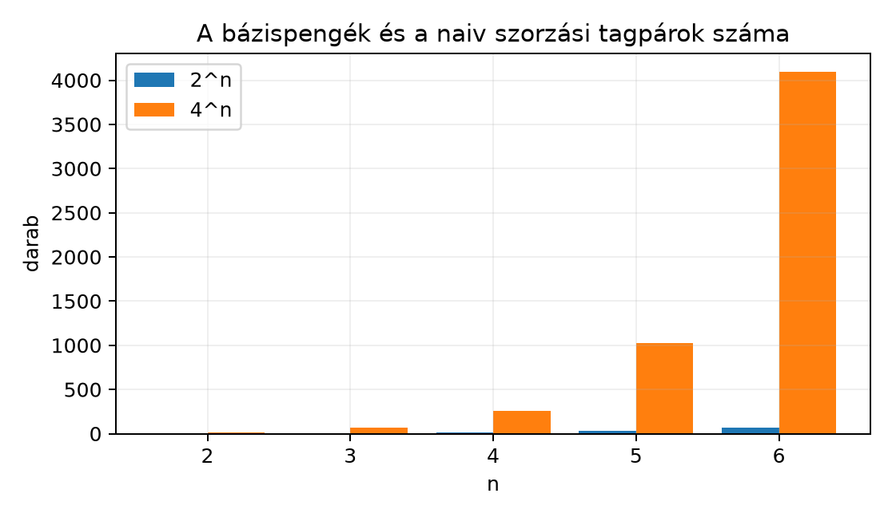

A Bázispengék bitmaszkkal: az általános szorzás
algoritmusa alfejezetben felépített ga.py modul
tetszőleges dimenzióban és metrikában kiszámolja a geometriai szorzatot.
A kényelemnek azonban ára van: ha a dimenzió nő, a bázispengék száma
,
a lehetséges tagpárok száma pedig
.
Mielőtt tehát egy nagyobb feladatban a saját könyvtárunkat vagy egy
külső programkönyvtárat választanánk, meg kell becsülnünk, hány
szorzásra és összeadásra számíthatunk, és mikor érdemes kihasználni a
multivektorok ritkaságát. Azt is látni fogjuk, hogy a gyakorlatban
előforduló rotorok, vektorok és pengék sokkal kevesebb komponenst
tartalmaznak, mint a teljes algebra.
A következő ábra a bázispengék számát és a naiv szorzás tagpárjainak számát mutatja bázisvektor esetén. A függőleges skála miatt a nagyobb értékeket a diagram csak közelítő arányban tudja megjeleníteni, ezért a pontos számok a diagram alatti táblázatban is szerepelnek.

| bázispengék | naiv tagpárok | |
|---|---|---|
| 2 | 4 | 16 |
| 3 | 8 | 64 |
| 4 | 16 | 256 |
| 5 | 32 | 1024 |
| 6 | 64 | 4096 |
A robbanás jól látható: hat bázisvektornál egyetlen sűrű multivektor-szorzás már több ezer tagpárt érint. A geometriai algebra gyakorlati alkalmazásaiban azonban ritkán fordul elő, hogy mind a komponens nullától különböző.
Definíció. Legyen , és jelölje a multivektor nemnulla együtthatójú bázispengéinek számát. Az kitöltöttsége (density) a
hányados. Ha kicsi, akkor -et ritka multivektornak nevezzük.
A Bázispengék bitmaszkkal: az általános szorzás
algoritmusa alfejezetben bevezetett szótáralapú reprezentáció
pontosan az ilyen ritka multivektorokat kezeli jól: csak azokat a
maszk: együttható párokat tárolja, amelyek együtthatója nem
nulla. A nulla komponenseket tehát nem szorozzuk végig, és nem is
foglalunk nekik memóriát.
Ha és két multivektor -ben, és a szorzást a bitmaszkos algoritmus végzi, akkor a legegyszerűbb, sűrű esetben mindkét multivektornak komponense van. A szorzás ekkor
tagpárt dolgoz fel. Ezen belül minden tagpárra el kell végezni a penge-szorzást: az XOR-maszk kiszámítását, az előjel meghatározását és a metrikus szorzó előállítását. Ha az előjelet a
képlettel közvetlenül számoljuk, az egy tagpárra vetítve legfeljebb lépés, így a teljes naiv szorzás legrosszabb esetben műveletet igényel. A gyakorlatban azonban az előjeleket bitműveletekkel, átmeneti tömbökkel vagy előre kigenerált táblázattal is számolhatjuk, ezért a domináns tag a -es tagpárszám marad.
Tétel. Legyen , és jelölje , illetve a nemnulla komponensek számát. A szótáralapú szorzás legfeljebb tagpárt dolgoz fel, és az összevonások után legfeljebb nemnulla komponenst tárol. A sűrű esetben , tehát a tagpárok száma .
Bizonyítás. A szótáralapú algoritmus a
maszk: együttható párokon iterál. Mivel
-nak
,
-nek
bejegyzése van, a két ciklus összesen
párt képez. Minden pár egyetlen XOR-maszkot és egyetlen
együttható-szorzatot ad. Az azonos XOR-maszkhoz tartozó együtthatókat a
szorzat szótára összegzi, így a végső szótárban legfeljebb annyi kulcs
lehet, ahány különböző bázispenge
-ben
létezik, azaz
.
Ha
,
akkor
.
A tétel állításai ebből közvetlenül következnek. ∎
A ritkaság tehát drasztikusan csökkenti a tagpárok számát. Ha például -ban egy általános multivektor 8 komponensű, két ilyen szorzása 64 tagpárt igényel. Ezzel szemben egy vektor legfeljebb 3, egy bivektor legfeljebb 3, egy rotor pedig tipikusan 2 komponensű.
Tekintsük a -beli síkbeli forgatást. A konvenciónk szerint az síkban szöggel forgató rotor
Ennek két nemnulla komponense van: a skalár és az -es tag. Egy vektornak három komponense van. A forgatás a
szendvicsszorzat.
Számoljuk meg a szükséges tagpárokat a ritkaság kihasználásával. Először az szorzatot kell kiszámítani. Mivel -nek 2, -nek 3 nemnulla komponense van, ez tagpárt jelent. Az eredmény legfeljebb komponenst tartalmazhat: a skalárrészt és az trivektoros tagját, valamint a vektoros részt. Pontosabban az eredmény vektor és trivektor keveréke, legfeljebb 4 bázispengével.
Ezután az szorzat következik. Az első eredmény legfeljebb 4 komponensű, -nek pedig 2 nemnulla komponense van, tehát ez a lépés legfeljebb tagpárt igényel. A két lépés együtt
tagpárt dolgoz fel, szemben az általános tagpáros sűrű szorzással. A rotoros forgatás tehát több mint négyszer kevesebb munkával elvégezhető, ha a szorzás a nemnulla komponenseket keresi.
Az alábbi kód a saját bitmaszkos ga.py modulunkkal
ellenőrzi a bázispengék számát és egy ritka szorzást. A
v * B szorzásban a v vektornak egy, a
B bivektornak egy nemnulla komponense van, tehát a naiv 64
tagpár helyett a szótáralapú algoritmus mindössze egyetlen tagpárt
dolgoz fel.
from ga import Algebra
# Bázispengék és a naiv tagpárok száma
for n in range(2, 7):
dim = 2 ** n
print(f"n={n}: bázispengék = {dim}, naiv tagpárok = {dim * dim}")
# Ritkaság G(3)-ban: az e1 vektor és az e12 bivektor szorzása
alg3 = Algebra([1, 1, 1])
v = alg3.vector([1, 0, 0])
B = alg3.blade("e12")
print("e1 * e12 =", v * B)n=2: bázispengék = 4, naiv tagpárok = 16
n=3: bázispengék = 8, naiv tagpárok = 64
n=4: bázispengék = 16, naiv tagpárok = 256
n=5: bázispengék = 32, naiv tagpárok = 1024
n=6: bázispengék = 64, naiv tagpárok = 4096
e1 * e12 = e2Az e1 * e12 = e2 eredmény a G(3)
szorzótáblájából ismert:
.
A kód tehát helyesen adja vissza a bázispengét, miközben a ritkaság
miatt nem járja be az összes lehetséges tagpárt.
A szótáralapú, általános szorzás rugalmas, de a ciklusok és a szótár-keresések futásidőben költségesek. Ha egy alkalmazásban a dimenzió rögzített, például mindig -ban dolgozunk, érdemes a szorzást fokszám-specializált formában megvalósítani. Ilyenkor előre tudjuk, hogy például egy bivektor és egy vektor szorzata legfeljebb hány tagpárt ad, és a kódot úgy generálhatjuk, hogy ne legyenek elágazások és szótár-keresések.
A gondolatmenet a következő. A algebrában a bázispengék száma 8, tehát minden multivektor egy 8 hosszú tömbként is tárolható. Ha a szorzást két ilyen rögzített méretű tömb között végezzük, a 64 lehetséges tagpárt előre kigenerálhatjuk:
A kigenerált szorzás csak a nemnulla együtthatójú tagokat tartalmazza, így a belső ciklusok nélkül, közvetlenül az együtthatók lineáris kombinációját számolja. Ezt a technikát kódgenerálásnak nevezzük: a program indulásakor vagy fordítási időben legyártjuk a szorzófüggvényt, amely a konkrét algebrára és fokszámokra optimalizált.
A saját ga3.py modulunk valójában már ilyen
fokszám-specializált, mert az MV3 osztály nyolc konkrét
attribútumban tárolja az együtthatókat. A ga.py általános
modul ezzel szemben a bitmaszkos, szótáralapú megoldást használja. A két
megközelítés kiegészíti egymást: az általános modul kényelmes
kísérletezésre és új algebrák felderítésére, a specializált modul pedig
gyors számításra való.
A gyakorlatban nem kell mindent magunk implementálnunk. A következő könyvtárak ismert és széles körben használt megoldások, de az API-k és a konvenciók gyorsan változhatnak, ezért használat előtt mindig ellenőrizni kell a dokumentációt és a metrika-sorrendet.
Algebra([1,1,1]) hívásunkkal
való összevetés előtt ellenőrizni kell, hogy a könyvtár milyen
bázisneveket és előjelkonvenciót használ.Fontos, hogy ezek a könyvtárak más jelölési konvenciót is használhatnak. Például a bázisvektorok sorrendje, a pszeudoszkalár előjele vagy a szendvicsszorzat definíciója eltérhet a könyvünkben rögzített
alakítástól. Mindig végezzünk el egy egyszerű ellenőrző számítást, például , és hasonlítsuk össze a saját modulunk kimenetével.
A rotoros forgatások ismételt végrehajtásakor a lebegőpontos kerekítési hibák felhalmozódhatnak. Egy rotorra elvileg , de a sok szorzás után a ténylegesen kiszámított érték
lehet, ahol nagyon kicsi, de nem nulla. Ez azt jelenti, hogy a forgatás hosszú idő után enyhén torzíthatja a vektorok hosszát.
A javítás egyszerű: időnként újranormalizáljuk a rotort. Az új rotor
lesz. Mivel a nevező egy skalár, a osztás minden komponenst ugyanazzal a értékkel skáláz. A gyakorlatban az újranormalizálást elvégezhetjük minden lépésben, vagy csak bizonyos időközönként, ha a hiba elfogadható.
Ugyanez a gondolat alkalmazható bármely verzorra, nem csak a rotorokra. A konvenciónk szerint egy penge inverze is használhatja a
alakítást, ahol a nevező skalár; ha a penge normája a kerekítések miatt eltér a pontos értéktől, a normalizált penge hosszát így állíthatjuk helyre.
A mindig érvényesnek hitt költsége. A csak a sűrű eset felső becslése. A szótáralapú reprezentációban a nulla komponenseket nem szorozzuk, ezért a tényleges költség , ami ritka rotoroknál és vektoroknál jóval kisebb.
A külső könyvtár konvenciójának ellenőrzés nélküli átvétele. A clifford, kingdon vagy ganja.js más bázisneveket, metrika-sorrendet vagy előjelkonvenciót használhat. Ha például a könyvtár a pszeudoszkalárt helyett sorrendben építi fel, akkor a vektoriális szorzat előjele eltérhet. A saját eredményeinket mindig ellenőrizzük egy-egy egyszerű szorzattal.
Az újranormalizálás elhagyása hosszú forgatási szimulációkban. A lebegőpontos hiba miatt a rotor normája lassan eltér az egységtől. Ha ezt nem javítjuk, a forgatás a vektorok hosszát is megváltoztathatja, ami merev testek szimulációjában fizikailag hibás eredményt ad.
(a) Fogalmi kérdés: Miért van -nek pontosan bázispengéje?
(b) Kézi számolás: Hány bázispengéje és hány naiv szorzási tagpárja van -nek? Ha egy -beli rotornak csak egy bivektoros komponense van, és egy vektort forgatunk vele, legfeljebb hány tagpárt dolgoz fel a ritka szendvicsszorzat?
(c) Bizonyítási feladat: Indokold meg, hogy ha -nak , -nek nemnulla komponense van, akkor a szótáralapú szorzás legfeljebb tagpárt végez. Miért lehet a valódi tagpárok száma ennél kevesebb?
(d) Python-feladat: Tételezd fel, hogy a szótáralapú
multivektor a terms szótárban tárolja a nemnulla
együtthatókat. Írj egy density(terms) függvényt, amely
visszaadja a nemnulla komponensek számát úgy, hogy az abszolút értékben
egy küszöbnél kisebb értékeket nullának tekint. Teszteld
-ban.
(a) Minden hosszú bitmaszk megfelel egy bázispengének. Az -edik bázisvektor vagy szerepel a pengében, vagy nem, tehát minden bit kétféle lehet. Az független döntés különböző bitmaszkot ad. A 0 maszk a skalárpenge, az összes bit 1-es maszk pedig a pszeudoszkalár.
(b) -ben a bázispengék száma . A naiv szorzás tagpárjai . Egy -beli rotor, amely egyetlen egységbivektorral forgat, alakja
tehát 2 nemnulla komponense van. Egy négykomponensű vektorral az első szorzás tagpárt igényel. Az eredmény legfeljebb 8 komponenst tartalmazhat: a szorzatban vektoros és trivektoros rész is megjelenik, és -ben 4 vektor- és 4 trivektorbázis van. A második szorzás -rel legfeljebb tagpárt igényel. A teljes szendvicsszorzat tehát legfeljebb tagpárt dolgoz fel.
(c) A szótáralapú algoritmus a for
ciklusokat a tárolt kulcsokon futtatja, ezért
minden nemnulla komponensét
minden nemnulla komponensével párosítja. Ez legfeljebb
párt jelent. A valódi szám azért lehet kevesebb, mert egyes tagpárok
nullát adhatnak, ha a közös indexekhez tartozó metrikus szorzó nulla,
vagy ha az összevonások során különböző tagpárok ugyanahhoz a maszkhoz
kerülnek és kiejtik egymást.
(d) Egy lehetséges megoldás:
def density(terms, tol=1e-12):
return sum(1 for coeff in terms.values() if abs(coeff) > tol)
# Példa G(3)-ban, ahol a multivektor nemnulla komponensei:
terms = {0b001: 1.0, 0b011: 2.0, 0b101: 3.0}
print(density(terms)) # 3A szótáralapú, bitmaszkos szorzás általános, de a sűrű eset költsége
tagpár. A gyakorlatban a multivektorok gyakran ritkák: ha
-nak
,
-nek
nemnulla komponense van, a szorzás legfeljebb
tagpárt igényel. A rotoros forgatás
-ban
így a 64 tagpár helyett 14 tagpárral elvégezhető. A rögzített dimenziójú
alkalmazásokban a fokszám-specializáció és a kódgenerálás tovább
csökkenti a futási időt. A clifford, kingdon és ganja.js könyvtárak
használhatók, de konvenciójukat ellenőrizni kell. A hosszú forgatási
szimulációkban a rotor újranormalizálása
szerint elengedhetetlen. Továbbvitt eredmény. A
könyvtárválasztási szempontokat a Záróprojekt I:
saját geometriai algebra könyvtár tesztekkel alfejezetben használjuk
fel, amikor a saját ga.py modulunkat teszteljük és külső
könyvtárral vetjük össze.
Az itt bemutatott költségbecslés a bitmaszkos algoritmus közvetlen következménye. A clifford, kingdon és ganja.js könyvtárak pontos API-ját, verziószámait és belső reprezentációját ebben a fejezetben nem ellenőriztük; használatuk előtt a dokumentációjukat és a metrika-sorrendjüket egy egyszerű próbával érdemes összevetni a saját modulunkkal.